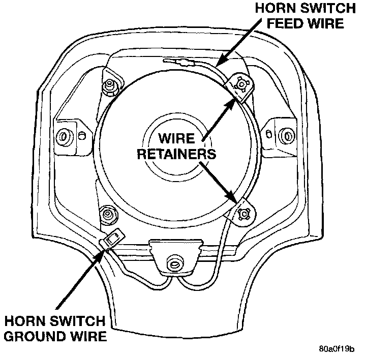
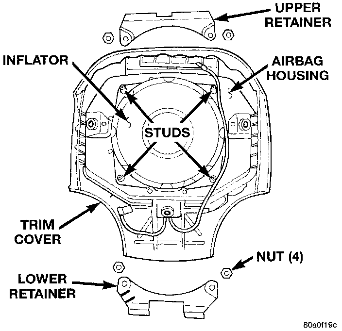
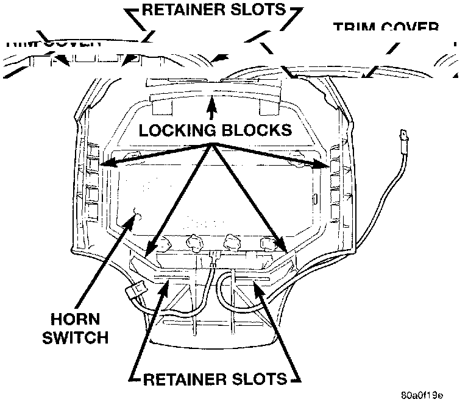
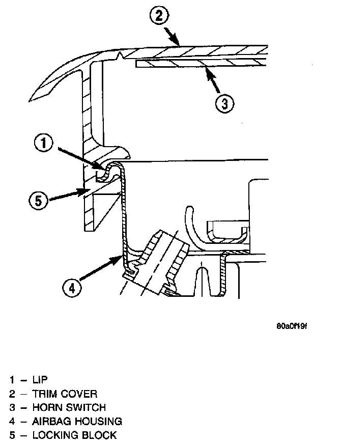

Driver Side Airbag Module Trim Cover Replacement
WARNING:^ THE AIRBAG SYSTEM IS A SENSITIVE, COMPLEX ELECTROMECHANICAL Unit BEFORE ATTEMPTING TO DIAGNOSE OR SERVICE ANY AIRBAG SYSTEM OR RELATED STEERING WHEEL, STEERING COLUMN, OR INSTRUMENT PANEL COMPONENTS YOU MUST FIRST DISCONNECT AND ISOLATE THE BATTERY NEGATIVE (GROUND) CABLE. THEN WAIT TWO MINUTES FOR THE SYSTEM CAPACITOR TO DISCHARGE BEFORE FURTHER SYSTEM SERVICE. THIS IS THE ONLY SURE WAY TO DISABLE THE AIRBAG SYSTEM. FAILURE TO DO THIS COULD RESULT IN ACCIDENTAL AIRBAG DEPLOYMENT AND POSSIBLE PERSONAL INJURY.
^ THE HORN SWITCH IS INTEGRAL TO THE AIRBAG MODULE TRIM COVER. SERVICE OF THIS COMPONENT SHOULD BE PERFORMED ONLY BY CHRYSLER-TRAINED AND AUTHORIZED DEALER SERVICE TECHNICIANS. FAILURE TO TAKE THE PROPER PRECAUTIONS OR TO FOLLOW THE PROPER PROCEDURES COULD RESULT IN ACCIDENTAL, INCOMPLETE, OR IMPROPER AIR BAG DEPLOYMENT AND POSSIBLE PERSONAL INJURY.
1. Disconnect and isolate the battery negative cable. If the airbag module has not been deployed, wait two minutes for the system capacitor to discharge before further service.
2. Remove the driver side airbag module.

3. Remove the two plastic horn switch feed wire retainers from the studs on the airbag housing.
4. Unplug the horn switch ground wire from the airbag module lower trim cover retainer.

5. Remove the four nuts that secure the upper and lower trim cover retainers to the studs on the airbag housing.
6. Remove the upper and lower trim cover retainers from the airbag housing studs.

7. Disengage the five trim cover locking blocks from the lip around the outside edge of the airbag housing and remove the housing from the cover.
Driver Side Airbag Trim Cover Locking Blocks Engaged:

8. when installing the trim cover and horn switch, be certain that the locking blocks are fully engaged on the lip of the airbag housing.
9. When installing the upper and lower trim cover retainers be certain that the tabs on each retainer are engaged in the retainer slots of the trim cover.
10. Install and tighten the trim cover retainer nuts to 10 N.m (90 in. lbs.).
11. Reverse the remaining removal procedures to complete the installation, but do not connect the battery negative cable at this time. See Testing and Inspection/Procedures for the proper procedures.